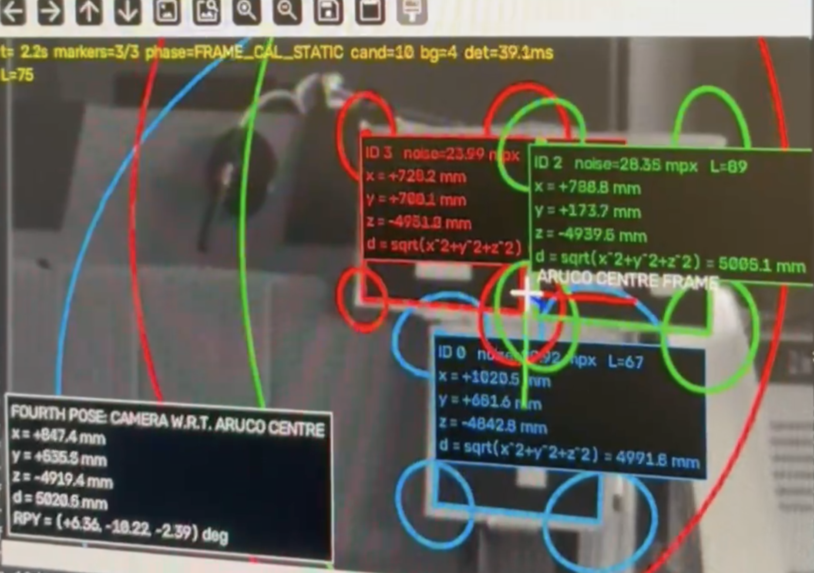
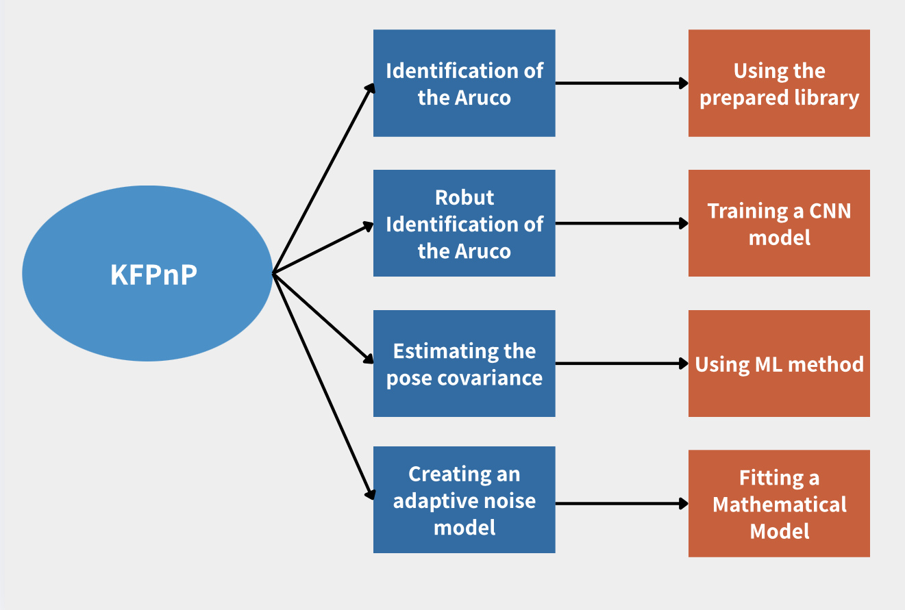
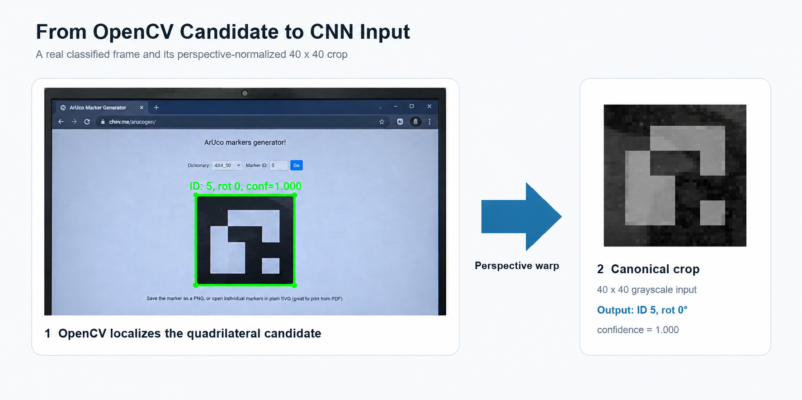
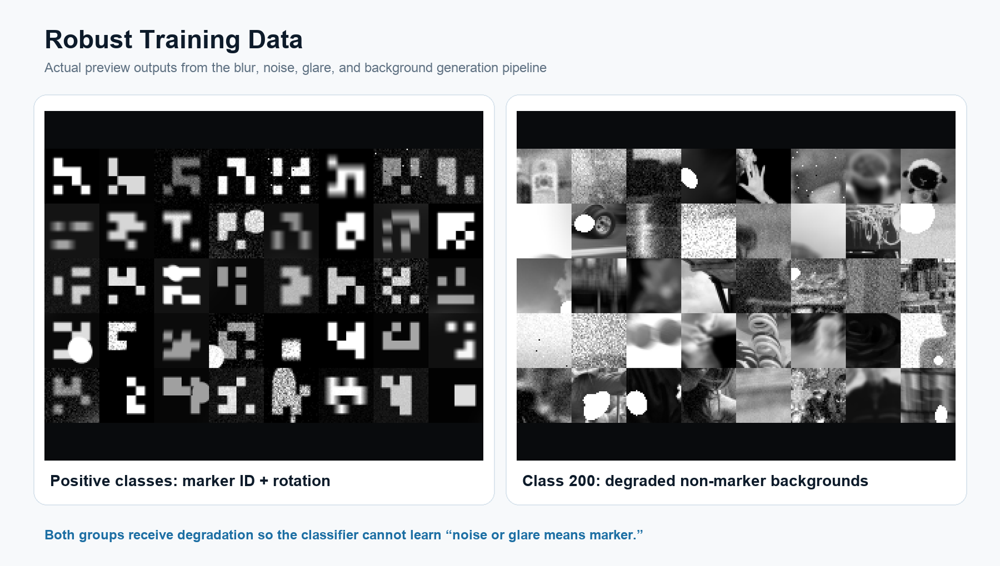
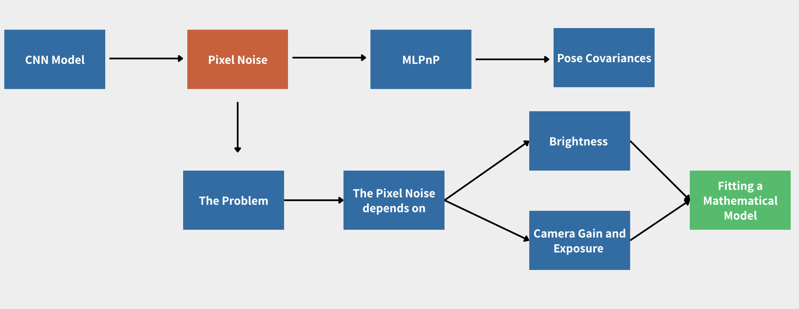
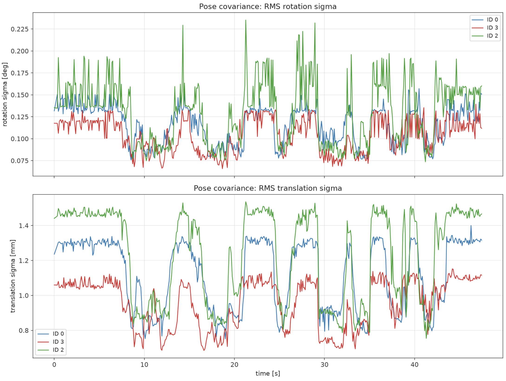

Robust Marker Recovery · Adaptive Uncertainty · Weighted MLPnP
KFPnP: Robust and Adaptive ArUco Pose Estimation
KFPnP strengthens both ends of the ArUco-to-pose pipeline. At the front end, OpenCV still localizes candidate quadrilaterals, while a learned classifier recovers marker identity and orientation when blur, sensor noise, glare, harsh direct sunlight, deep shadow, or poor indoor illumination makes classical dictionary decoding unreliable — conditions that show up constantly once a marker moves outdoors. At the pose-estimation end, a live per-corner covariance tells the weighted MLPnP refinement how strongly each observation should influence the solution. The result is a pipeline designed for real camera experiments rather than only clean, frontal marker images.
Overview
Robust ArUco Tracking
A pose cannot be estimated if the marker identity disappears, and it should not be trusted blindly when its corners are poorly observed. KFPnP therefore improves both marker identification and measurement weighting.
What Breaks Outside the Laboratory
Classical ArUco decoding depends on a clear black border and correctly sampled binary cells. Motion blur mixes neighbouring cells, glare erases black regions, low light increases sensor noise, and perspective or resizing reduces the number of useful pixels. Outdoors, direct sunlight adds a further failure mode on top of these: hard cast shadows cut across the marker, specular highlights wash out entire cells, and the sun's angle changes continuously through the day, so the same physical marker can look very different from one minute to the next. A candidate can therefore be geometrically visible but fail the dictionary test. Even when it is detected, its four corners do not all have the same precision.
KFPnP addresses these failures separately: robust identification recovers the ID and rotation of a localized candidate, while adaptive uncertainty estimates how accurately each corner was measured. Robustness therefore means both keeping the correct marker in the pipeline and preventing weak corners from dominating its pose.
Two Separate Contributions, One Final Solver
Which marker is this?
OpenCV localizes the quadrilateral; classical decoding or CNN recovery returns the marker ID, rotation, confidence, and ordered corners.
Output: reliable 3D-to-2D correspondences.
How reliable is each corner?
Brightness, gain, and local image gradients produce a new 2 × 2 uncertainty matrix for every detected corner.
Output: per-corner measurement covariance.
Identification and covariance estimation remain separate until the final solver: one establishes the correspondence, while the other determines its influence.

Two Contributions at a Glance
The identification branch produces the correct marker correspondences. The covariance branch estimates their reliability. Only then are both outputs combined by weighted MLPnP to estimate the pose and its uncertainty.
Stage 1 · Robust Identification
Recovering ID and Orientation Under Real-World Degradation
Dictionary-based ArUco decoding remains the fastest first choice in clean conditions. The learned stage is added as a recovery path for localized candidates whose borders are still usable but whose internal binary pattern has been damaged by blur, noise, glare, harsh sunlight, deep shadow, low contrast, or limited image resolution. It is built to solve two distinct problems at once — recognizing the marker regardless of how it is rotated, and recognizing it regardless of how it is lit.
Recovering Marker Rotation
A marker can appear at any of four canonical rotations relative to the camera. The classifier resolves this by predicting a rotation index alongside the ID, so the four detected corners can be reordered into the canonical ArUco order before pose estimation, regardless of how the marker was physically oriented when it was placed.
Recognizing Markers Across Illumination — Including Direct Sun
The same classifier is trained across a wide sweep of illumination — deep shadow, ordinary indoor lighting, overcast daylight, and harsh, direct sunlight — so identification keeps working outdoors, where sun angle, glare, and shadow contrast change constantly and cannot be controlled the way they can in a lab. This is what actually lets the pipeline operate in real-world scenes rather than only under controlled lighting.

Why Robustification Is Needed
In real experiments, the marker does not remain perfectly frontal, sharp, and evenly illuminated. A short camera or screen movement introduces directional blur; reflections and direct sunlight saturate parts of the code; a cast shadow can cut a marker cleanly in half; and low light increases pixel noise. Classical decoding can reject the complete marker after only a few corrupted cells. Robustification preserves identification continuity through both kinds of change — how the marker is rotated and how it is lit — so the downstream pose estimator does not lose the marker at exactly the moments when the experiment, or the weather, becomes difficult.
How the Learned Identifier Was Added to OpenCV
OpenCV is still responsible for locating quadrilateral regions that may contain a marker. Candidates that decode normally follow the classical path. A rejected or uncertain candidate can instead be perspective-warped into a canonical 40 × 40 grayscale crop and sent to the learned classifier.
The 201 output classes have a direct meaning. Classes 0–199 represent marker IDs 0–49 under four rotations: 0°, 90°, 180°, and 270°. Class 200 represents background or a non-marker crop. The marker classes use class = 4 × marker ID + rotation index. The highest softmax probability becomes the confidence score.
A background prediction or a confidence below the chosen threshold rejects the candidate. Otherwise, the predicted class is decoded into marker ID and rotation. The rotation is then used to reorder the four corners into the canonical ArUco order before the known marker geometry and image corners are sent to pose estimation.
Rotation and illumination are learned together but solve different problems. The class index recovers rotation directly, since each of the 200 marker classes is tied to one of the four canonical orientations. Illumination robustness instead comes from how the classifier is trained: every crop, at every rotation, is also exposed to a wide sweep of lighting — from deep shadow to harsh, direct sun — so the network learns to hold its ID and rotation prediction steady while illumination varies, rather than treating a shadowed or sunlit marker as visually different from a well-lit one.
This is robust identification, not unconstrained object detection. If OpenCV cannot produce a usable quadrilateral at all, the classifier has no crop to classify. The learned model complements candidate localization rather than replacing it.
200 Marker-Rotation Classes
Fifty marker IDs are rendered in four canonical rotations, producing 200 positive classes. Real image crops without markers form class 200. Training and validation use separate background source images so the classifier cannot succeed by memorizing the same background textures.
Degradations Added During Training
Training crops are randomly modified with box, Gaussian, and directional motion blur; Gaussian read noise, intensity-dependent shot noise, and hot/dead pixels; specular glare; and a deliberately wide illumination sweep — harsh directional sunlight, hard cast shadows, overcast daylight, and low-contrast indoor lighting — to match what a marker actually looks like outdoors, not just on a lab bench. The same families of corruption are also applied to background crops so the model cannot learn that “noise means marker.”
CNN Compared With an RBF SVM
A small CNN operating on 40 × 40 crops and a paper-style RBF SVM operating on 10 × 10 inputs are evaluated on the same 201-class task. Selection considers marker accuracy, background rejection, marker-to-background errors, background false positives, and wrong ID or rotation predictions—not only overall accuracy.

Training-Time Robustification
Representative training crops show how blur, sensor noise, glare, damaged pixels, shadows, and illumination changes are applied to marker and background examples.
Stage 2 · Light-Adaptive Pose Covariance
Estimating How Much to Trust Each Detected Corner
This second contribution begins after marker identity and corner ordering are already known. It does not classify the marker. Instead of using one fixed pixel-noise constant, it estimates a fresh measurement uncertainty for every corner in every frame using the current illumination and local image structure.
Sensor Noise, Calibrated Offline
A camera's own read noise and photon noise depend on how bright the scene is and how much gain the sensor is applying — a corner observed at low light and high gain is simply noisier than one observed in bright, low-gain conditions. This relationship is characterized once, offline, against the camera itself, and evaluated live using only the current frame's brightness and gain.
Local Image Structure
A well-defined corner with strong gradients in two directions constrains its own position tightly; a corner that looks more like an edge is poorly constrained along that edge's direction. KFPnP reads this directly from the local gradient structure around each corner, so two corners can receive different uncertainty estimates even under identical lighting.
One Covariance, Recomputed Live
The two signals are blended into a single per-corner covariance matrix, evaluated independently for every corner on every frame — never fitted once and reused, and never assumed to be the same across the frame.
Calibrated on the target camera through a dedicated noise-characterization procedure, then evaluated at runtime with no online re-fitting required.

How the Two Signals Combine
A high-level view of how sensor conditions and local corner structure feed a single per-corner covariance — the exact combination is left out of this page.
The exact functional form, fitted calibration constants, and calibration procedure are intentionally omitted here.
Stage 3 · Integration
Combining Correspondence and Uncertainty in Weighted MLPnP
Stage 1 supplies the correct marker geometry and ordered 2D corners. Stage 2 supplies a covariance describing the reliability of each corner. Weighted MLPnP consumes both: correspondence tells it what each point means, while covariance tells it how strongly that point should influence the solution.
Reliability-Weighted Refinement
The camera pose is recovered through an iterative refinement that weights each corner's contribution by the inverse of its estimated uncertainty: a sharp, well-lit corner pulls the solution toward it more strongly than a dim, poorly constrained one, and that balance is free to shift from one frame to the next.
Pose With Its Own Covariance
The solver's output is not just a position and orientation — it also carries a propagated six-degree-of-freedom pose covariance, giving any downstream filter or controller an honest measure of how much to trust that frame's estimate.
Live Validation of Adaptive Noise Estimation
During this live test, a flashlight is aimed at the ArUco markers to create abrupt illumination changes and glare. The covariance ellipse expands as the corner measurements become less reliable and contracts when visual conditions improve, showing the adaptive noise model responding in real time.
Live Validation Under Changing Illumination
This recording shows the complete calibrated pipeline operating in real time while illumination and marker pose are changed by hand. Marker identity remains available, while the estimated corner and pose uncertainty increase as visual conditions become less reliable and decrease again when the observations improve.
Live Validation
Validated Under Real, Dynamic Lighting
The full pipeline — already calibrated, with no online re-fitting — was tested live against three independently tracked markers while illumination and marker pose were varied continuously and by hand. The validation therefore checks both parts of the design: whether identity remains available during degradation and whether the reported covariance increases when the corner measurements become less reliable.

Uncertainty That Tracks Reality
As the scene was dimmed and re-brightened by hand, the reported per-corner and propagated pose uncertainty rose and fell in step — consistently across all three markers, regardless of their position or orientation on screen — confirming that the effect is driven by illumination itself, not by any single marker's geometry.
Conclusion
Conclusion
KFPnP shows that a pose pipeline improves the most not by chasing a better point estimate, but by being honest about how much to trust each measurement.
Key Findings
- A learned recovery stage extends OpenCV candidate localization by classifying degraded quadrilateral crops into marker ID, rotation, or background — recovering both how the marker is oriented and staying reliable across lighting, from deep shadow to direct sun.
- Training with blur, sensor noise, glare, a full outdoor illumination sweep, and similarly degraded background crops targets the failure modes observed in real camera experiments, indoors and out.
- Per-corner uncertainty that reacts to both sensor conditions and local image structure predicts real measurement scatter far better than a fixed constant.
- Feeding that uncertainty into the pose solver, rather than treating every corner equally, propagates cleanly through to pose covariance without any online re-fitting.
- The live experiment must test both continuity of correct identification and the response of covariance under real blur, glare, low light, motion, and changing viewpoint.
Where This Fits
KFPnP preserves the useful parts of the classical pipeline. OpenCV still proposes quadrilaterals and performs normal dictionary decoding when possible. The CNN adds a confidence-scored recovery path for difficult candidates, and the adaptive covariance adds observation-specific weights for MLPnP-style refinement. Downstream filtering can continue to consume pose and covariance without knowing which identification path was used.
The central limitation remains explicit: learned identification requires an OpenCV candidate crop. Severe occlusion or blur that destroys the quadrilateral itself still requires redetection, temporal tracking, or a separate object-detection stage.
Ongoing Work
From Independent KFPnP Poses to Continuous Adaptive-R Tracking
The next stage of the project adds temporal filtering after KFPnP. The existing pipeline already estimates a six-degree-of-freedom pose and its covariance for every accepted frame. The ongoing work uses those outputs inside a camera Kalman filter that estimates position, velocity, and attitude while changing its measurement covariance according to the quality of the current visual observations.
Why Add a Kalman Filter After KFPnP?
KFPnP estimates the rig pose independently in each accepted frame. Even when the pose is correct, frame-to-frame noise can make the trajectory irregular. Short losses of marker visibility also leave gaps in the output, and a single weak pose can create a large jump.
The Kalman filter connects the individual poses over time. It smooths measurement noise, estimates translational velocity, and predicts the state during short periods in which no valid visual update is available.
A fixed measurement covariance would assign the same confidence to every KFPnP result. This is unsuitable because visual accuracy changes with illumination, distance, blur, viewing angle, local corner structure, and the number of visible markers. The adaptive-R extension therefore changes camera trust as the observation quality changes.
This extension does not replace KFPnP. KFPnP remains the measurement source; the Kalman filter adds temporal consistency and short-term prediction.
Position, Velocity, and Attitude
The camera filter uses a nine-dimensional state. Position and attitude describe the marker-rig centre relative to the fixed camera. Velocity is not measured directly by KFPnP; it is estimated from the sequence of accepted poses.
Here, \([x,y,z]^T\) is position, \([v_x,v_y,v_z]^T\) is velocity, and \([\phi,\theta,\psi]^T\) represents roll, pitch, and yaw.
Constant Velocity Between Camera Frames
During the short interval \(\Delta t\) between two frames, position is propagated using the current velocity. Velocity and attitude are held constant in the nominal prediction:
“Constant velocity” applies only over one short frame interval. Process noise allows the real motion to accelerate or rotate away from this simple prediction.
How the Initial \(Q_k\) Represents Unmodelled Motion
The filter does not include acceleration as a state. Instead, unknown random acceleration represents motion that the constant-velocity model cannot predict. The same acceleration disturbance changes both position and velocity:
The off-diagonal position–velocity terms appear because the same unknown acceleration affects both quantities. Larger \(Q_k\) makes the filter more responsive to manoeuvres but less smooth. Smaller \(Q_k\) produces more smoothing but can cause lag during acceleration or rotation.
KFPnP Measures Pose, Not Velocity
The first three rows select position and the last three select attitude. The velocity columns are zero because velocity is inferred temporally. The first accepted pose initializes position and attitude, while velocity starts at zero with a larger initial uncertainty in \(P_0\).
Two Levels of Adaptive Visual Uncertainty
The first level already exists inside KFPnP: adaptive corner covariance changes the weight of each image point, and weighted MLPnP propagates it into a local 6 × 6 pose covariance \(R_{\mathrm{MLPnP},k}\).
The ongoing second level uses recent KF innovations to detect pose disagreement not fully represented by the local solver covariance. A numerical floor prevents unrealistically small uncertainty, while upper limits prevent one failure from making the filter permanently insensitive.
Estimating Pose-Level \(R_k\) From Recent Innovations
The first stationary seconds provide an initial repeatability estimate. Consecutive differences remove the unknown constant pose; if neighbouring samples are independent and have equal covariance, the difference contains twice the original covariance:
During operation, a limited window of innovations estimates the observed residual scatter after subtracting the part predicted by the state uncertainty:
The next measurement covariance combines the innovation estimate, the current MLPnP covariance, and a minimum floor. Smoothing avoids abrupt frame-to-frame changes:
The updated covariance is used on the following accepted pose, avoiding a circular calculation in which the same residual simultaneously determines and tests its own uncertainty. The current implementation begins with a diagonal \(R_k\); retaining reliable cross-axis terms remains a possible later extension.
Propagate State and Uncertainty
When no visual pose is accepted, only this prediction is available. It can bridge a short observation gap, but covariance and possible drift grow with time. Long marker losses therefore remain a limitation rather than a solved tracking case.
Balance the Prediction and Camera Pose
A larger \(R_k\) lowers the Kalman gain and protects the trajectory from a weak visual estimate. A smaller \(R_k\) allows a clear pose to correct the prediction more strongly. Angular innovations are wrapped to \([-\pi,\pi]\) before correction.
Joseph Covariance Update and NIS Monitoring
The Joseph form is used for the covariance correction because it better preserves symmetry and positive semidefiniteness under numerical rounding:
The normalized innovation squared checks whether the measured disagreement is compatible with the uncertainty predicted by the filter:
For a consistent six-dimensional update, the long-run mean is approximately six under the usual Gaussian assumptions. A large NIS can indicate underestimated \(Q\), underestimated \(R\), bias, bad geometry, timing error, angle-convention error, or an incorrect pose; it does not identify a unique cause by itself.
A Fixed \(R\) Cannot Treat Unequal Frames Differently
Fixed \(R\) Too Small
The filter over-trusts poor poses produced in low light, at long range, during blur, or from weak corner geometry. One bad frame can pull the trajectory away from the real motion.
Fixed \(R\) Too Large
The filter is protected against weak frames but underuses high-quality measurements. Corrections become slower and prediction drift can remain for longer than necessary.
Adaptive \(R_k\)
Camera trust follows observation quality. Clear, geometrically strong poses can correct the state firmly, while uncertain poses have less influence on the track.
Adaptive covariance cannot repair an incorrect camera calibration, wrong marker dimensions, corner-order errors, coordinate-frame mistakes, or prolonged missing measurements. These conditions must be checked separately.
Research Prototype Under Experimental Validation
The state model, KFPnP measurement interface, adaptive-R logic, Kalman prediction and correction, covariance propagation, live diagnostics, and post-run plotting have been implemented as a first prototype. Preliminary tests have already shown that accepted camera updates, prediction-only intervals, and NIS must be monitored explicitly.
Final accuracy and consistency claims are intentionally deferred. The next milestone is a controlled dataset with independently measured poses, followed by fixed-R versus adaptive-R replay using identical images. Only after those tests will the initial \(Q_k\), covariance limits, innovation window, smoothing factor, and gating thresholds be finalized.
This section is presented as ongoing work so that the portfolio distinguishes the completed KFPnP measurement pipeline from the temporal tracking extension that is currently being validated.